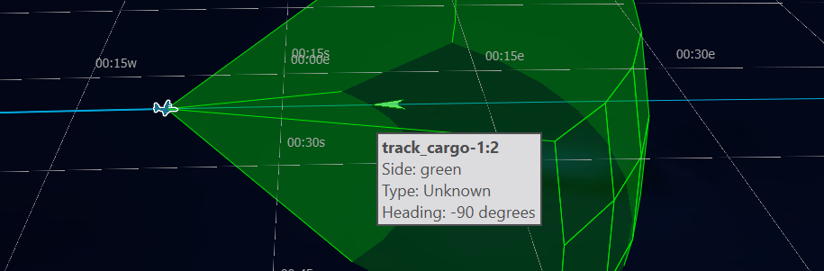

Processors¶
A processor provides the ability to define behaviors for a given platform.
Most processors are defined by the user using the AFSIM scripting language.
The following list includes some predefined processor types:
|
|
|
|
A number of built-in processors are available - each serving a unique function. This guide will demonstrate the implementation of a commonly used model, the WSF_TRACK_PROCESSOR.
Quick Start¶
A track processor’s primary responsibility is to implement a processor interface for a track_manager. It is responsible for three major functions:
Accept reports (tracks) from local and off-board sources
Feed reports (tracks) to a track manager for correlation and fusion
Send updated tracks to interested parties.
To implement a track processor, include the following code snippet in a platform or platform type definition in the scenario:
processor track_proc WSF_TRACK_PROCESSOR
master_track_processor
purge_interval 10 sec
report_interval 3 sec
end_processor
To receive tracks from sensors, the connected sensors must include the following code line in the desired sensor definition:
internal_link track_proc
Tracks may also be passed to other platforms through communications and the external_link command. Additionally, action may be taken by an internal task processor that implements behaviors. Behaviors and Communications are discussed in upcoming modules. Before behaviors can be utilized, a task processor must be defined. Define a task processor (task manager) with the following code:
processor TASK_MANAGER WSF_TASK_PROCESSOR
update_interval 10 sec
end_processor
Then add an instance of this processor to the desired platform or platform type definition with the following code:
add processor task_mgr TASK_MANAGER
end_processor
Note
This will result in the owning platform making decisions and taking action if TASK_MANAGER implements a behavior tree. Behaviors and Behavior Trees are discussed in upcoming modules.
Closer Look¶
Note
The following steps assume that the “simple_flight” scenario is present as discussed in Tracks.
Adding a Track Processor¶
In order to do anything with the sensor track created by the AIR_RADAR, a track processor must be added to the platform type definition of CARGO_AIRCRAFT:
Open the simple_flight project or scenario in Wizard.
Create a new text file, in the simple_flight directory and name it, track_processor.txt.
Open cargo_aircraft.txt and add the following code at the beginning of the file:
include_once track_processor.txt
Open track_processor.txt and add the following track processor command block / definition:
processor TRACK_MANAGER WSF_TRACK_PROCESSOR master_track_processor purge_interval 10 sec report_interval 3 sec end_processor
Return to cargo_aircraft.txt and add the following code within the CARGO_AIRCRAFT platform type definition:
add processor track_proc TRACK_MANAGER purge_interval 15 sec report_interval 2.5 sec end_processor
Tip
If a value is defined already on an externally defined platform part, as is shown in the example above, values may be overwritten. The override will apply only to the platform or platforms of the platform type that have the overwritten implementation.
Finally link the cargo_radar track report to the track_proc by adding the following code line to the radar definition:
internal_link track_proc
Having made these additions, simulate the simple_flight scenario in Warlock.
Advance the simulation to a time just prior to the aircraft entering each other’s sensor range (~15 min).
In Warlock’s Visibility widget, hide one of the teams, and select the aircraft of the visible team.
Wait until the hidden platform enters the sensor range of the selected platform.
Notice that a track appears, visible only while the platform remains selected. This is a result of the newly added track_manager. The expected view is provided below:

The opposing view similarly shows an incoming blue track when the green aircraft is selected.
Now that the tracks are available for processing, and the aircraft are aware of one another, they must resolve the conflict by taking action. This requires the use of an additional processor, the WSF_TASK_PROCESSOR, and the implementation of behaviors. Behaviors and Behavior Trees are discussed in an upcoming module.
Adding a Task Processor¶
The task processor will enable “cargo-1” and “cargo-2” the ability to make decisions in order to avoid a collision by implementing behaviors. For this module, the processor will be implemented so that it is available for use in upcoming modules.
Complete the following steps to implement a task processor:
Add the following processor command block to track_processor.txt:
processor CARGO_TASK_MANAGER WSF_TASK_PROCESSOR update_interval 10 sec end_processor
Add the following processor implementation block to the platform type definition of CARGO_AIRCRAFT in cargo_aircraft.txt:
add processor task_mgr CARGO_TASK_MANAGER end_processor
This skeleton processor is now ready to implement a behavior tree.
Review¶
After completing this module, the simple_flight project should include all previous files and a new file, track_processor.txt. Additions/modifications were made to cargo_aircraft.txt. Changes reflect the following:
track_processor.txt |
|---|
# track_processor.txt
# A component of the simple_flight demo
processor TRACK_MANAGER WSF_TRACK_PROCESSOR
master_track_processor
purge_interval 10 sec
report_interval 3 sec
end_processor
processor CARGO_TASK_MANAGER WSF_TASK_PROCESSOR
update_interval 10 sec
end_processor
|
cargo_aircraft.txt |
|---|
# cargo_aircraft.txt
# A component of the simple_flight demo
include_once track_processor.txt
radar_signature CARGO_AIRCRAFT_RADAR_SIG
constant 10 m^2
end_radar_signature
sensor AIR_RADAR WSF_GEOMETRIC_SENSOR
frame_time 5 sec
maximum_range 30 nm
reports_location
reports_bearing
reports_side
reports_velocity
azimuth_field_of_view -45.0 deg 45.0 deg
elevation_field_of_view -15.0 deg 15.0 deg
ignore_same_side
on
end_sensor
platform_type CARGO_AIRCRAFT WSF_PLATFORM
icon c130
spatial_domain air
category cargo
mover WSF_AIR_MOVER
update_interval 3 sec
end_mover
radar_signature CARGO_AIRCRAFT_RADAR_SIG
add sensor cargo_radar AIR_RADAR
internal_link track_proc
end_sensor
add processor track_proc TRACK_MANAGER
end_processor
add processor task_mgr CARGO_TASK_MANAGER
end_processor
end_platform_type
|
Summary¶
Tracks may be used by processors to determine decisions through behaviors and behavior trees. Processors primarily act on tracks, serving different purposes depending on the nature of the processor. Tracks may be passed between platform parts of a given platform through the use of the internal_link command. More advanced track processing and decision making may be achieved through implementation of Communications.